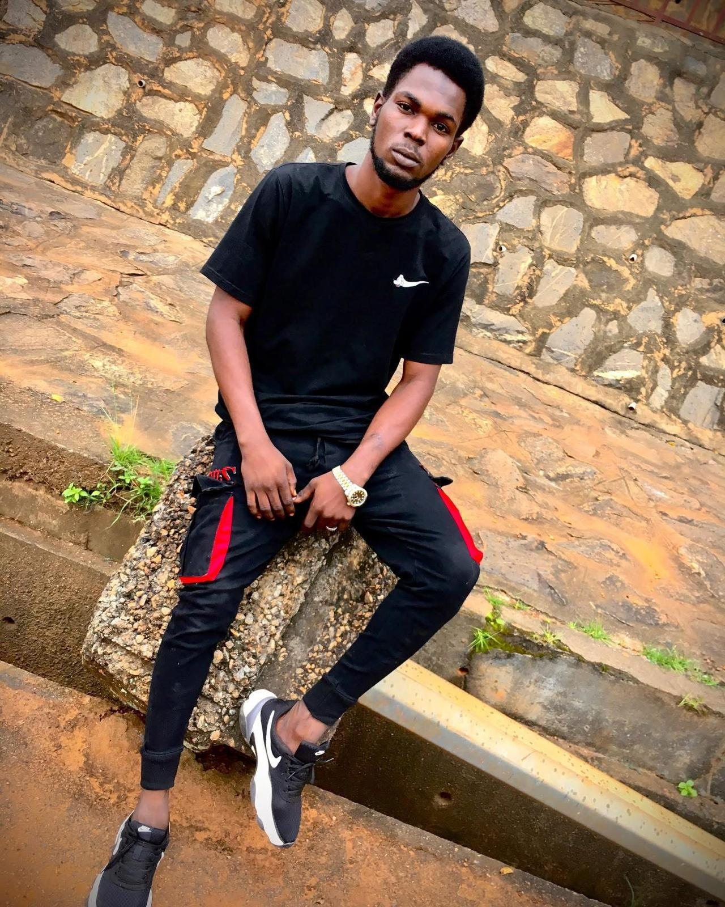
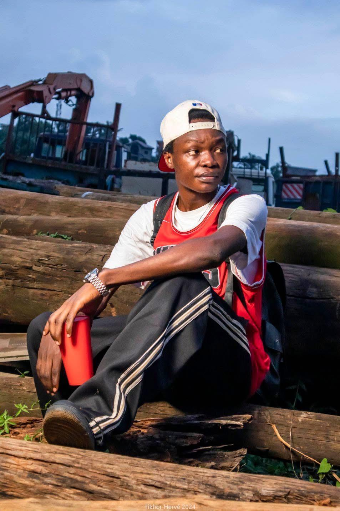
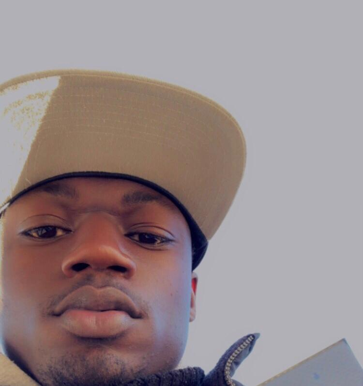
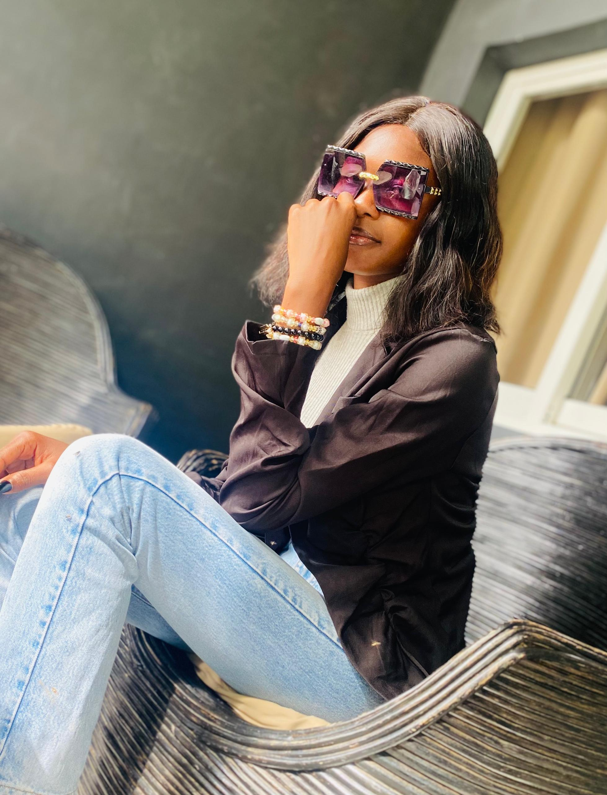

Chez Beta House, notre aventure a commencé avec un groupe de jeunes étudiants passionnés par la musique et l’art, réuni par une vision commune : aider les artistes du Tchad à réaliser leurs projets malgré les difficultés. Nous nous sommes organisés, combinant nos compétences, notre créativité et nos ressources pour créer une plateforme dédiée au développement des talents émergents. Ensemble, nous voulons surmonter les défis et trouver des moyens innovants de soutenir les artistes dans la création, la production et la diffusion de leur musique. Grâce à notre engagement et à notre passion, nous travaillons sans relâche pour offrir un avenir musical plus inclusif et dynamique au Tchad. Aujourd'hui notre mission continue de guider nos actions
Notre mission est d’encourager et de soutenir la créativité, de promouvoir l'excellence artistique, de développer des talents, de créer des opportunités et de construire une communauté artistique dynamique. Nous offrons un environnement auquel nos artistes peuvent s'épanouir, explorer leur potentiel créatif
Nous incitons nos artistes à explorer et à exprimer leur plein potentiel créatif. Nous nous engageons à offrir des services de qualité à chaque étape du processus, de la production musicale à la promotion, en passant par la gestion des artistes. Chez Beta House le travail d'équipe est valorisé, nous collaborons avec des talentueux pour conduire à des résultats exceptionnels. L'honnêteté, la transparence et l'éthique sont présentes dans toutes nos relations et transactions. Nous nous efforçons de bâtir une relation de confiance avec nos artistes, partenaires et nos clients.



